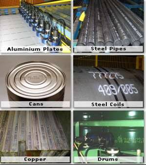

Debido a la creciente actividad industrial que se desarrolla en el noroeste del país, surge la necesidad de crear una empresa prestadora de servicios y comercializadora de productos de codificación en la región.
Nuestra experiencia inicia en 1996. En el año 2002 nace Servicio Técnico del Pacífico, empresa que ofrece a sus clientes reducir los costos y los tiempos de respuesta a necesidades en el área de producción, lo que nos convierte en socios comerciales de nuestros clientes.
Logrando rebasar las espectativas de calidad con nuestros productos, prestando eficientes servicios (preventivo y/o correctivo) y dando asesorías para optimizar el uso de los equipos. Así mismo, surtiendo consumibles y refacciones a buen precio y con entrega inmediata.
Far far away, behind the word mountains, far from the countries Vokalia and Consonantia, there live the blind texts.
